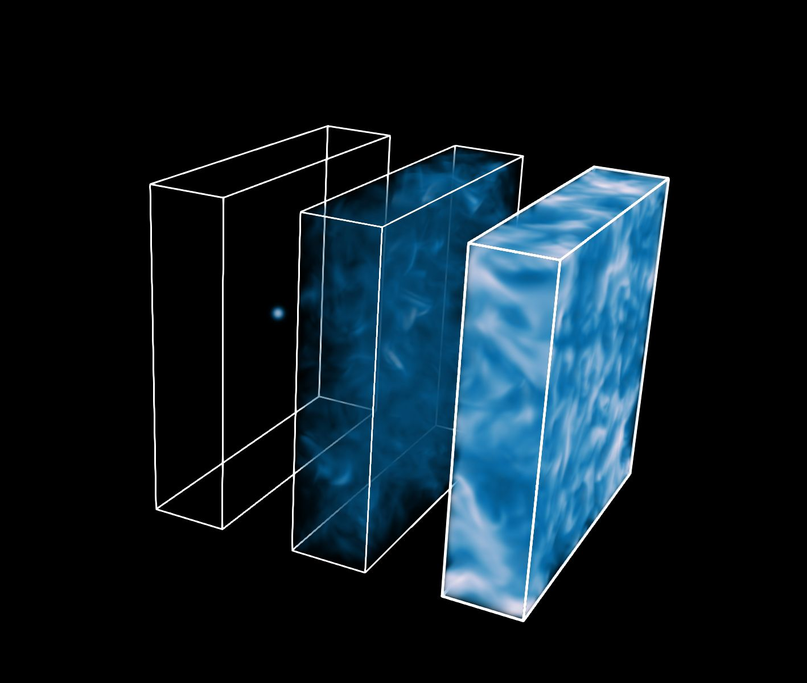

Intermittent fluctuations determine the nature of chaos in fully developed turbulence
What determines the nature of chaos in fully developed turbulence? While mean-field theory predicts a Re0.5 scaling for the Lyapunov exponent, it turns out the actual scaling is considerably steeper, Re>0.5. Furthermore, both analytical studies and direct numerical simulations (DNS) reveal that velocity perturbations have a preferred direction of growth: along the compressional eigendirection of the stress tensor. Crucially, this steeper scaling originates from intermittent fluctuations in the eigenvalues of the stress tensor.
This work has been featured as an Editor’s Suggestion in Physical Review Letters 136, 214001. Find out more on the journal webpage.
